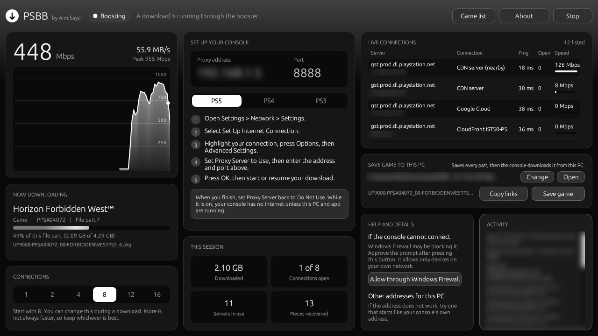

For PS5, PS4 and PS3
Downloads at the speed you pay for.
Consoles download games over a couple of connections. PSBB uses many at once, on the PC you already have.
Free. Version 1.1.0. Windows 10 and 11, and Android 8 or later. Browse the game list.

Fast, and steady.
Tested on a 1 Gbps line, downloading a 100 GB game.
Built for big downloads.
Everything happens on the PC. The console just downloads as usual.
Many connections
The game is split into pieces and fetched from the fastest servers at once, then handed to the console in order.
Recovers on its own
A slow or stalled server is dropped and its piece continues elsewhere, from the last byte received.
Slow lines too
On slower internet it finds the number of connections that works best, and keeps checking.
Save now, install later
Save a whole game on a laptop or phone, anywhere with fast internet. At home, the console installs it from there at network speed.
A shared game list
Games people download appear in a public list, ready to save on a laptop before you get home.
Works with other tools
Copy every file's link for any download manager. Files saved that way are used the same way.
Set up in a minute.
Both devices on the same home network. A cable on each is best.
Download for Windows- 1. Open PSBB on your PC or phoneIt shows an address and a port. On a PC, if Windows asks, allow it on your network. On a phone, use the same Wi-Fi as the console.
- 2. Set the console's proxyIn the console's network settings, set Proxy Server to Use and enter that address and port. The app shows the steps for PS5, PS4 and PS3.
- 3. Start the downloadKeep the app open. It shows the game, the speed and every server in use.
- 4. When you finishSet Proxy Server back to Do Not Use on the console.
Private by design.
Your downloads stay between your console, your PC and PlayStation's servers.
- Only your home networkThe app only accepts devices on your own network, and passes everything except game downloads through untouched.
- What the game list receivesWhen sharing is on, only the address of the game file on PlayStation's download servers. Never your IP address, console, account or anything about you. Turn it off in About.
- Nothing to sign in toNo account, no tracking, no ads. The app checks this site for updates and the game list, and nothing else.
- Your games stay yoursGame files are encrypted by PlayStation. A game only installs on a console whose account owns it.